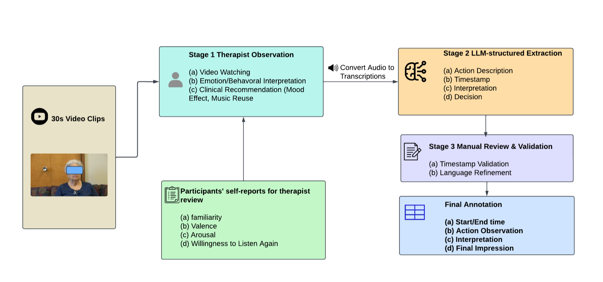

First-author · IEEE Transactions on Affective Computing (accepted, 2026)
A Multimodal Dataset for Music-Induced Emotion and Micro-Behavior Analysis in Older Adults
Most emotion datasets feature young adults or actors. Older adults express emotion more subtly, and models trained on young faces often miss those signals. I led the construction of a therapist-annotated, de-identified multimodal dataset to fill this gap.
17older adults (60+)
200clips · ≈183K frames
1,326labeled micro-behaviors
4modalities: face · gaze · head · body
- Designed an IRB-approved protocol: 12 music stimuli, self-reports of valence, arousal, liking and familiarity, with participants recruited from the community.
- Built a 3-stage expert-to-label pipeline. A music therapist writes free-text observations, an LLM extracts structured timestamps, and a human validation pass turns them into a 12-class micro-behavior taxonomy.
- Extracted de-identified features with OpenFace and OpenPose (action units, gaze, head pose, upper-body keypoints). Only derived features are shared, which protects participant privacy.
- Funded by the USF CREATE Award and the Florida High-Tech Corridor Early-Stage Innovation Fund.